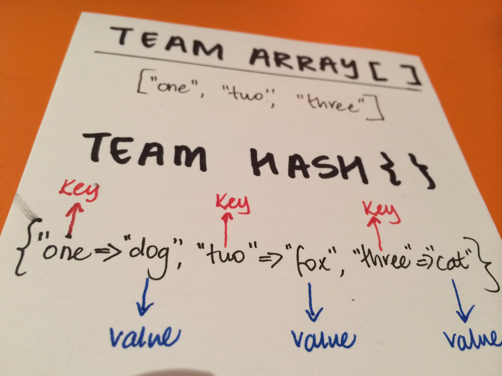

Triangles are my favorite shape. Three points where two lines meet.
Toe to toe, back to back, let's go, my love, it's very late.
The Array vs The Hash
ARRAY and HASHES 101
- What are they? Both are classes. Both are collection methods and ways of storing data. In Ruby, you store data in hashes or arrays so you can access them as and when required.
- What do they look like? They both use bracket notation. The difference is that square brackets [ ] are used for team array and squiggly brackets { } are used for team hash.

- What's "team key" and "team value"? As per your hash diagram. Great question there. This is actually what makes a hash unique from an array. Keys and values are essentially Ruby's way of classifying its data, within the "hash collection". Here in our diagram we have "team key" represented by "one", "two" and "three". Keys go first in your array and are followed by their corresponding "value" counterparts, in this instance we have "dog", "fox" and "lamb". So "one" is the same as "dog", "two" is the same as "fox" and "three" is the same as "lamb". So in summary, a hash points an object to another object, unlike an array which purely just stores the list of objects with no onward reference.
- Expanding on collections... Everything in Ruby is an object. Therefore anything can really be stored in either an array or a hash, including variables, strings, integers, floats and objects. You can have an array stored within an array (within multiple arrays even) - this is referred to as a two-dimensional array. Similarly you can have hashes stored within an array and arrays stored within hashes. It works both ways. For example you may have a hash full of students that you look up with a key ID that contains an array that orders the students by admission date.
HOW DO THEY DIFFER? WHEN WOULD YOU USE AN ARRAY vs WHEN TO USE A HASH
How do you know if you need to use an array over a hash? They seem pretty similar but they are quite different. Here's some of the things I've identified that seem to help me:
- ORDERING With arrays the slots are lined up in a row, each one is numbered starting from '0'. With hashes the slots aren't in any sequential order of significance, they're jumbled up. You can also use any object to refer to a slot, not just a number as in the case of arrays. So ask yourself, do the things/objects you're trying to store need a set order? If yes, use an array. If the things/objects you're trying to keep track of don't really fit into an ordered list, then best use a hash.
- ACCESS Think about accessing your data. Do you need to remember and match the item to a specific slot? If yes, use an array, if not, use a hash. Hashes certainly provide more flexibility in this instance, however arrays are really efficient, also in this instance.